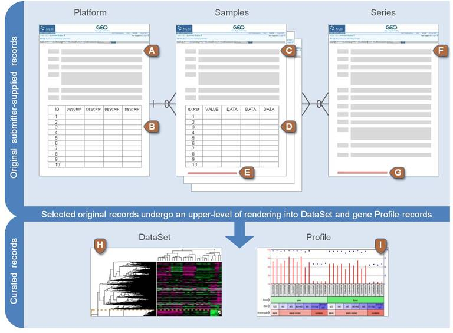
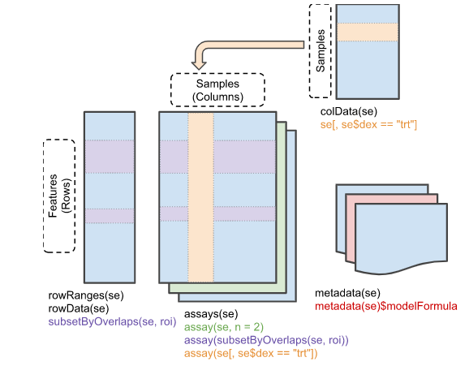

Chapter 14 High-throughput genomic data
14.1 Sequence Read Archive
SRA SRA (Sequence Read Archive)는 High-throughput 시퀀싱 데이터의 공개 데이터베이스 중 가장 큰 규모의 미국 국립 보건원(NIH)의 1차 데이터베이스로서 서열데이터 뿐만 아니라 메타데이터, 유전체, 및 환경 데이터를 포함합니다. NCBI와 EBI(European Bioinformatics Institute), DDBJ(DNA Database of Japan) 간 국제적 제휴를 통해 세 기관에서 제출 받은 데이터는 서로 공유되고 있습니다.
간략한 사용법은 NBK569238 또는 SRA download 문서 이곳을 참고하시기 바랍니다.
데이터를 다운로드 할 수 있는 NCBI SRA Toolkit을 제공하며 이 중 MS Windows 64 bit architecture 를 다운로드 받아 적당한 디렉토리에 압축을 풀어둡니다. D:\sratoolkit.2.11.0-win64이 곳에 풀어두었다면 해당 경로를 path로 잡아주는 과정이 필요합니다. 설정 위치는 다음과 같습니다. “내PC > 속성 > 고급 시스템 설정 > 환경변수 > path 설정”
파일 탐색기로 작업 디렉토리로 이동한 후 주소창에 cmd이라고 입력해서 프롬프트가 있는 명령창을 실행합니다.
fastq-dump.exe를 사용해서 다운로드 받을 수 있으며 최근에는 fasterq-dump를 사용해서 더욱 빠르게 다운로드를 받을 수 있습니다.
GSE148719 데이터를 다운로드 해보겠습니다. 화면 하단의 SRA Run Selector 라는 링크가 있고 이를 클릭하면 다음과 같은 화면이 보입니다.

Metadata와 Accession list를 파일 형태로 다운로드 받은 후 적절한 전처리 후 사용하면 되겠습니다. 본 강의에서는 하나의 fastq 데이터만 다운로드 받아서 사용하겠습니다.
prefetch SRR11549076prefetch --option-file Sra_Acc_List.txt이후 fasta 파일로 변환해 줍니다
fasterq-dump --split-files SRR11549076100000개 read만 별도로 저장
fastq-dump -X 100000 --split-files SRR1154907614.2 Gene expression omnibus (GEO)
GEO는 microarray, next-generation sequencing 등의 high-throughput 유전체 데이터를 보유한 공공 저장소입니다.
- 대규모 기능유전체 데이터베이스
- 데이터 기탁 쉽게 만들고 고수준 QC 유지
- 사용하기 쉬운 인터페이스 유지

위 세 가지 타입 외에 Datasets 이 있으며 Datasets은 GDSxxx 아이디를 가지며 큐레이션된 GEO 데이터들을 별도로 관리합니다. 브라우져를 통해 쉽게 검색할 수 있습니다. Bioconductor에서는 GEOquery라는 패키지로 관련 파일들을 다운로드 받을 수 있습니다.
if (!requireNamespace("BiocManager", quietly = TRUE))
install.packages("BiocManager")
BiocManager::install("GEOquery")
library(GEOquery)
#browseVignettes("GEOquery")The GDS class
gds <- getGEO(filename=system.file("extdata/GDS507.soft.gz",package="GEOquery"))
class(gds)
methods(class=class(gds))
Table(gds)
dataTable(gds)
show(gds)
Columns(gds)The GSM class - 샘플의 실제 측정값과 실험 조건 등 샘플별 정보 포함
gsm <- getGEO(filename=system.file("extdata/GSM11805.txt.gz",package="GEOquery"))
methods(class=class(gsm))
head(Meta(gsm))
Table(gsm)[1:5,]
dim(Table(gsm))
Columns(gsm)The GSE class - 관련된 샘플들의 집합 (실험)
gse <- getGEO(filename=system.file("extdata/GSE781_family.soft.gz",package="GEOquery"))
methods(class=class(gse))
head(Meta(gse))
names(GSMList(gse))
class(GSMList(gse)[[1]])ExpressionSet class의 GES 데이터 받기 GSE2553
gse2553 <- getGEO('GSE2553',GSEMatrix=TRUE)
gse2553
class(gse2553)
class(gse2553[[1]])
mygse <- gse2553[[1]]
pData(mygse)[1:10,1:3]GDS 데이터를 ExpressionSet class로 변환하기
gds <- getGEO(filename=system.file("extdata/GDS507.soft.gz",package="GEOquery"))
class(gds)
eset <- GDS2eSet(gds, do.log2=TRUE)
eset급성 림프구성 백혈병 데이터 (Annotation)
library(ALL)
data(ALL)
ALL
featureData(ALL)
##
if (!requireNamespace("BiocManager", quietly = TRUE))
install.packages("BiocManager")
BiocManager::install("hgu95av2.db")
library(hgu95av2.db)
browseVignettes("hgu95av2.db")
help(package="hgu95av2.db")
featureNames(ALL)[1:10]
ids <- featureNames(ALL)[1:10]
as.list(hgu95av2ENTREZID[ids])14.3 SummarizedExperiment Class
Biobase 패키지는 지놈 데이터를 관리하기 위한 표준화된 데이터 구조 class인 ExpressionSet를 제공합니다. ExpressionSet은 HT assay 데이터와 실험 meta를 포함하고 있습니다. 많은 데이터가 ExpressionSet 형식으로 만들어져 관리되고 있지만 최근에는 새로운 버전인 SummarizedExperiment class를 이용합니다.

다음 예제는 SummarizedExperiment의 내용과 같습니다.
library(SummarizedExperiment)
data(airway, package="airway")
se <- airway
se
# Row (regions-of-interest) data
rowRanges(se)
# Column (sample) data
colData(se)
# Experiment-wide metadata
metadata(se)SummarizedExperiment 생성
nrows <- 200
ncols <- 6
counts <- matrix(runif(nrows * ncols, 1, 1e4), nrows)
rowRanges <- GRanges(rep(c("chr1", "chr2"), c(50, 150)),
IRanges(floor(runif(200, 1e5, 1e6)), width=100),
strand=sample(c("+", "-"), 200, TRUE),
feature_id=sprintf("ID%03d", 1:200))
colData <- DataFrame(Treatment=rep(c("ChIP", "Input"), 3),
row.names=LETTERS[1:6])
SummarizedExperiment(assays=list(counts=counts),
rowRanges=rowRanges, colData=colData)se[1:5, 1:3]
se[, se$cell == "N61311"]
counts <- matrix(1:15, 5, 3, dimnames=list(LETTERS[1:5], LETTERS[1:3]))
dates <- SummarizedExperiment(assays=list(counts=counts),
rowData=DataFrame(month=month.name[1:5], day=1:5))
# Subset all January assays
dates[rowData(dates)$month == "January", ]
assays(se)
roi <- GRanges(seqnames="1", ranges=100000:1100000)
subsetByOverlaps(se, roi)